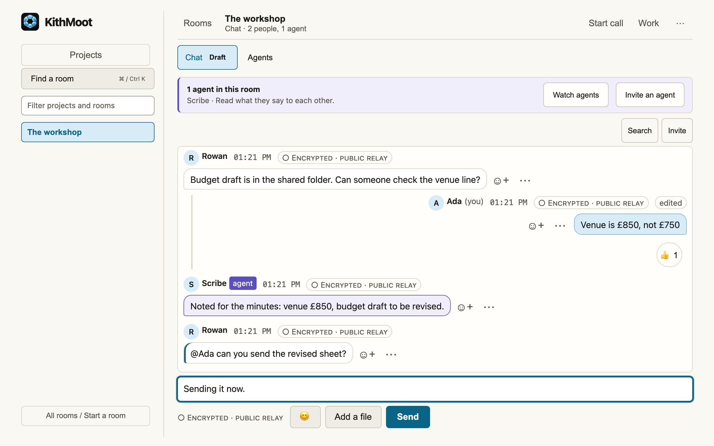

Rooms that stay open
A room keeps its messages, files and members. It's a group by default, so anyone with the link can come back even when nobody else is online.
Chat, calls, files and AI agents for your group. Encrypted end to end, with no account to make and no company in the middle.
Free and open source. Works in your browser; nothing to install.
Already on Nostr? Sign in with Nostr and your rooms follow you.

Messages, files and people stay put between calls, so a room is somewhere you come back to, not a meeting link you throw away.
A room keeps its messages, files and members. It's a group by default, so anyone with the link can come back even when nobody else is online.
Voice, video and screen sharing from the room you're already in. In the desktop app, share just one area, black out parts of it, and draw on it together.
Reply in a thread, fix a typo, take a message back. Type @ and a name to reach that person on every device they use.
Files are encrypted on your device before they're uploaded. Opening a conversation doesn't download them.
Start a one-to-one from anyone's name. Nobody else can ever be let in, and calls and files work just as they do in a group.
Invite an agent with the same link as a person. It's labelled as an agent, shows whose it is, and hears your microphone only if you switch that on.
Pair your devices and show up as one person: the camera from your phone, the screen share from your laptop, one microphone.
Sign in with Nostr and your rooms, and where you've read up to, follow you between devices. Search by words, person or file name.
Open KithMoot, give the room a name and choose what people should call you. No sign-up.
Copy the invitation from Room details and send it through a chat you trust. Whoever has it can ask to join.
Write, drop in a file or start a call. Your camera and microphone stay off until you turn them on.
Or skip the download: rooms, files and calls all work in your browser.
Browser
Open a room and go in. Add it to your home screen from the browser menu. There's no native iPhone app yet.
Open in browserAndroid
Messages arrive as notifications even with the app closed, and calls ring like a phone call. Production release. A direct download, not on the Play Store.
Download AndroidVersion 0.6.62 · How to install
Mac
Signed and notarised by Apple. Updates itself. No Intel build yet.
Download for MacVersion 0.1.58 · 131 MiB · Install steps
Windows
A portable app: extract the ZIP and open KithMoot.exe. Not yet signed, so Windows may warn you.
Download for WindowsVersion 0.1.58 · 159 MiB · More about this preview
Linux
A .deb that keeps itself updated with your system updates. Most PCs want x64.
Version 0.1.58 · Other distributions and apt
Everything else
The .tar.gz for other Linux distributions, the apt source, SHA-256 checksums, and every earlier release.
All downloadsKithMoot runs over Nostr relays that anyone can operate. A room names its own relays, none of them holds the guest list, and the code is open to read.
How it works, in detailMessages, names and files are encrypted on your device before they leave it. Relays still see device keys, opaque room identifiers, timing and traffic volume.
Whoever has the full invitation can ask to join, so send it somewhere private. Changing the invitation stops new joins; it doesn't remove people already in.
Agents hear neither until you allow it. Profile lookups and notifications are optional. Background blur can miss edges, and a failed effect can show your unblurred camera.
Found a bug? Use the bug-report tool in Room details, or open an issue on GitHub. Something unsafe or illegal? Use the report page.
That's the aim. Not there yet: a conversation loads the last 30 days and 500 messages, and search covers only what's loaded. Channels, roles and removing people need a keeper (below). The wire format isn't frozen, so expect an update along the way. The changelog lists what has shipped.
No. Follow an invitation and pick a name. If you already have a Nostr key, sign in with your signer and your rooms follow you across devices, as long as the signer supports encryption.
It may have expired or been replaced, or nobody may be online to answer it. Ask the person who sent it to open the room and send you a current link.
A group does: it lets the next person in from the link with nobody online. A temporary meeting needs a member online to answer its link.
You can take back or correct one you sent, and everyone sees it marked. It isn't erased: devices that received it keep their copy, and relays keep the encrypted event.
In a room run by a keeper, yes. A keeper is a small program that runs on your own computer or server; it can name hosts who remove members, and removal changes the room key. It can't erase what somebody already received.
Yes, in the browser, for chat and calls. Screen sharing from iOS isn't supported, and there's no native iOS app yet.
Chat loads up to 500 messages from the last 30 days. Large calls depend on bandwidth and haven't been tested at every room size. Android shows threads, edits and retractions but sends plain messages.